Module 5 Project
Introduction
Sharks are an ancient group of cartilaginous fishes in the class Chondrichthyes, subclass Elasmobranchii, and subdivision Selachimorpha. The selachians include over 500 species that are further placed in two superorders: Squalomorphii and Galeomorphii. Modern sharks originated nearly 200 million years ago (Grogan, Lund, and Greenfest-Allen (2012)) and, since then, have diversified into nearly every major marine ecosystem. This evolutionary success has been attributed to the diversity of their locomotor modes and associated body shape (Lauder and Di Santo (2015),Thomson and Simanek (1977)). A modest body of work devoted to the ecomorphology of sharks has focused largely on caudal fin shape as it relates to ecology and locomotor modes Wilga and Lauder (2004). Sharks have heterocercal tails in which the caudal part of the notochord flexes dorsally and supports a large dorsal lobe of the fin, while, with more than a few exceptions, the ventral lobe is small.

In their seminal work on shark ecomorphology, Thomson and Simanek (1977) put forth that there were four shark morphotypes:
- A group characterized by having a deep body, large pectoral fins, a symmetrical caudal fin with a narrow peduncle (i.e., base to the fin) and high-aspect ratio. A white shark represents this group.
- A group characterized by a body less deep than Group 1 and a caudal fin that is swept (i.e., large heterocercal angle–the angle between the upper and lower lobes of the fin). This group includes most carcharhinid sharks such as the bull shark.
- A group with a large head, blunt snout, a body that has anteriorly placed pectoral fins and posteriorly placed dorsal and pelvic fins, and a caudal fin with a low heterocercal angle and small ventral lobe. Catsharks (family Scyliorhinidae) and dogfish (order Squaliformes) represent this group.
- A group characterized by a caudal fin with a higher aspect angle similar to that of Group 2 but lacking an anal fin, e.g., the dalatiids.
 A white shark, Carcharodon carcharias, typical of Group 1. |
|
 A bull shark, Carcharhinus leucas, typical of Group 2. |
 A dogfish of the genus Squalus typical of Group 3. |
|
 A kitefin shark, Dalatias licha, typical of Group 4. |
Sternes and Shimada (2020) used geometric morphometrics and a multivariate analysis to evaluate the groups proposed by Thomson and Simanek (1977) and found that sharks fell into one of two morphotypes (A and B). Their Group A was characterized by an elongate body, posteriorly placed dorsal fin, and a swept caudal fin, while Group B was characterized by a deeper body, anteriorly placed dorsal fins, and a less swept caudal fin. Thomson and Simanek (1977) suggested that the shape of species in these two broad ecomorphs evolved due to differences in ecological niche and locomotor behavior. Specifically, they posited that the species of elongate Group A are typically benthic and swim like eels whereas the deeper bodied species of Group B are often pelagic and swim like salmon or tunas.

Although the work of Thomson and Simanek (1977) and later Sternes and Shimada (2020) points to interesting patterns in shark body shape, neither study explicitly studied the role of habitat—that is, pelagic or benthic—in influencing the evolution of body shape. In particular, Sternes and Shimada (2020) merely observed that their two groups with different body shapes often varied in their habitat preference. In addition, Sternes and Shimada (2020) made no explicit, quantitative phylogenetic test of their patterns. This leaves open an important question: Do pelagic and benthic sharks have significantly different body shapes? Subsequently, we might also ask, Has the morphology of pelagic and benthic sharks evolved at the same rate? These are the questions we will take on in this project.
These questions represent an important thrust of evolutionary research: what macroevolutionary events have contributed to diversity, whether in species or phenotype. To answer questions like these requires that we essentially recapitulate the Sternes and Shimada (2020) body-shape data set using landmark-based geometric morphometrics. This is a relatively straightforward, if tedious, method of capturing shape variation in a group of interest. For this, you’ll digitize 14 homologous landmarks on images of some 265 species of sharks. Using the best practices in the field of geometric morphometrics to align our landmarks and extract shape information, we’ll assess morphological disparity in a phylogenetic framework and assess the difference in rates of morphological evolution between pelagic and benthic sharks.
Methods
Image acquisition
A few decades ago, a morphometric project like this would require visiting museum collections from around the world to take images of the specimens and species of interest. In fact, this was a major part of Prof. Kenaley’s PhD thesis, which included trips to natural history collections in France, Denmark, Great Britain, Taiwan, Japan, Monaco, New Zealand, and Australia. Ahhhhhh, the good ol’ days. Fortunately (or unfortunately), travel to such wonderful places may be avoided because several resources exist that contain a trove of images of fish-like vertebrates.
We’ll make use of shark images that Prof. Kenaley and his students have collected in the course of a nearly identical research project. Real quickly, this is how we did it.
We first began with images of drawings from Compagno (1984), Compagno
(2001), and Ebert, Dando, and Fowler
(2021), all authoritative texts on the identification, ecology,
and evolution of sharks. Now, if we relied on only these drawings, we
might expect to take some heat from reasonable people who contend that
drawings are abstractions of specimens rather than direct
representations, like a photograph would be. So, we developed a custom R
workflow to obtain images for many of our 265 species from three public
biodiversity data sources: iNaturalist, [FishBase], and the
Global Biodiversity Information Facility
(GBIF). iNaturalist images were retrieved using the
rinat package, querying observations by scientific name and
downloading photographs at the largest available resolution. FishBase
images were scraped directly from species photo pages (https://www.fishbase.us/photos ) using HTML parsing, and
GBIF images were accessed via the rgbif API, restricting
searches to still images associated with preserved specimens. This
resulted in a cache of images for the ~265 species included in a recent
phylogeny of the elasmobranchs (Stein et al.
(2018)).
Species list, phylogeny, and ecology
The 265 species we’ll analyze in the study were chosen because they had decent images from the aforementioned sources and cover the nooks and crannies of the Stein et al. (2018) phylogeny, giving a broad sample of the group. As we move on, we’ll use this table to keep track of the size and habitat for each species. The habitat data for our study come from Compagno (1984) and Compagno (2001). Let’s load these data now so we have them handy.
library(tidyverse)## Warning: package 'ggplot2' was built under R version 4.5.2## Warning: package 'tibble' was built under R version 4.5.2## Warning: package 'tidyr' was built under R version 4.5.2## Warning: package 'readr' was built under R version 4.5.2## Warning: package 'purrr' was built under R version 4.5.2## Warning: package 'dplyr' was built under R version 4.5.2## Warning: package 'lubridate' was built under R version 4.5.2## ── Attaching core tidyverse packages ──────────────────────── tidyverse 2.0.0 ──
## ✔ dplyr 1.2.0 ✔ readr 2.2.0
## ✔ forcats 1.0.1 ✔ stringr 1.6.0
## ✔ ggplot2 4.0.3 ✔ tibble 3.3.1
## ✔ lubridate 1.9.5 ✔ tidyr 1.3.2
## ✔ purrr 1.2.1
## ── Conflicts ────────────────────────────────────────── tidyverse_conflicts() ──
## ✖ dplyr::filter() masks stats::filter()
## ✖ dplyr::lag() masks stats::lag()
## ℹ Use the conflicted package (<http://conflicted.r-lib.org/>) to force all conflicts to become errorsshark_dat <- read_csv("shark_data.csv") ## Rows: 288 Columns: 3
## ── Column specification ────────────────────────────────────────────────────────
## Delimiter: ","
## chr (2): sp, habitat
## dbl (1): PCL
##
## ℹ Use `spec()` to retrieve the full column specification for this data.
## ℹ Specify the column types or set `show_col_types = FALSE` to quiet this message.Because we’ll be comparing body shape in sharks, this project is by definition a comparative one and we’ll need a phylogeny for the group. Fortunately, a relatively recent phylogenomic analysis of over 500 species of elasmobranchs (sharks + batoids) has been published by Stein et al. (2018). Unfortunately, there is some phylogenetic discordance in this study. Specifically, when researchers analyze phylogenetic relationships, they typically repeat their analysis in a process known as bootstrapping. In phylogenetics, bootstrapping is conducted using the columns of the character matrix. Each pseudoreplicate contains the same number of species (rows) and characters (columns) randomly sampled from the original matrix, with replacement. A phylogeny is reconstructed from each pseudoreplicate, with the same methods used to reconstruct the phylogeny from the original data. This often results in a dataset of trees that have conflicting relationships—that is, phylogenetic uncertainty—and this was the case for the Stein et al. (2018) study. We’ll have to account for this in our analysis. But, more on that later . . .
In any case, we’ve used the taxa studied in this paper to find our images and we’ll use a tree file representing the phylogeny for our comparative analysis.

Geometric morphometrics
As you have learned in class and in your reading, researchers interested in comparing shape change between species often use landmark-based geometric morphometrics. A geometric morphometric study such as ours generally follows these steps:
- Data collection: select landmarks of interest, usually through digitization of specimen images.
- Data standardization: Make landmarks comparable across all specimens, usually through superimposition.
- Analysis: choose a statistical approach appropriate to the questions.
- Interpretation: use the outcome of the statistical analysis to assess the original questions.
Digitization and landmarking
You and your team/group will be assigned around approximately 100
images representing about 40 of the ~265 species to digitize. Your
team’s images have been pushed to your team’s repo. With the images now
in place, we’re ready to commence digitizing. We’ll do so in the
StereoMorph package, a library of functions designed for
digitization and seamless integration with other R packages integral to
geometric morphometrics (e.g., geomorph). In particular,
we’ll use StereoMorph’s digitizeImages()
which, when run, creates an interactive web browser session in which the
user places a number of specified landmarks on all images in a specific
directory.
Before we move on with this, some workflow hygiene . . . For this
part of the project, Prof. Kenaley recommends that each team member
create their own script for digitizing, perhaps named something logical
and unique, like “kenaley_stereomorph.R”. It’s in this script that we’ll
digitize and produce our landmarks, the essential data of this project,
i.e., there’s no need to include it in your submitted reports as a code
chunk. Now, let’s walk through how to assemble the script for
digitization in StereoMorph.
First, make sure you install StereoMorph (i.e.,
install.packages("StereoMorph")). Prime the script with the
appropriate library() calls.
library(tidyverse) #always
library(StereoMorph)Next, we’ll have to specify in what directory our images reside and to which directory the landmark data should be written. That is, our script will save the landmark images as modified text files that contain the coordinates of our landmarks and we need a place to store them. For instance, say my images were in a directory named “shark_images” and I want the landmarks I generate to reside in a directory “shark_landmarks”, I might add these important lines.
image_directory <- "shark_images"
landmark_directory <- "shark_landmarks"
if (!dir.exists(landmark_directory)) { dir.create(landmark_directory) }The first two lines generate those character objects we’ll pass on to our digitizing function. The third creates the landmark directory, but only does so if it doesn’t already exist—we’d hate to overwrite it if it had data in it.
Next, we need to establish what landmarks we want to digitize. Our shape analysis will be based on 14 landmarks identified here.
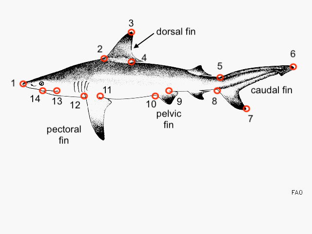
We want to store the names of these 14 landmarks so that
StereoMorph's digitizing function,
digitizeImages(), will know how many landmarks should be
placed on the images. If we make this vector of point names descriptive,
we’ll know where to place the points while we’re digitizing. Something
like this satisfies those two objectives nicely.
landmarks_ref <- c("1_snout", #tip of the snout
"2_dorsal_base_ant", #where the anterior base of the dorsal fin meets the body
"3_dorsal_tip", #apex of the dorsal fin
"4_dorsal_base_post",#where the posterior base of the dorsal fin meets the body
"5_cadual_base_dor",#where the anterior base of the caudal fin meets the body
"6_cadual_tip_dor", #tip of the dorsal lobe of caudal fin
"7_cadual_tip_vent", #tip of the ventral lobe of caudal fin
"8_caudal_base_vental", #where the postrio base of the caudal fin meets the body
"9_pelvic_base_post", #where the poster base of the pelvic fin meets the body
"10_pelvic_base_ant", #where the anterior base of the pelvic fin meets the body
"11_pect_base_post", #where the posterio base of the pectoral fin meets the body
"12_pect_base_ant", #where the anterior base of the pector fin meets the body
"13_mouth_post", #posterior margin of upper jaw/mouth
"14_mouth_ant") #anerior margin of mouthWith these preliminaries out of the way, we can now start digitizing
using digitizeImages(). Note that the
landmarks.ref argument takes the landmark vector we just
created. Also note that the image.file and
shapes.file arguments take our image and landmark
directories, respectively. Less crucially, we can also control how the
points will look in the session with these other arguments. Lastly,
notice that we don’t pass the output of digitizeImages() to
any object. That’s because the output is text files—we merely need to
run this function to produce the app we run to get them. Let’s do
that.
digitizeImages(image.file = image_directory,
shapes.file = landmark_directory,
landmarks.ref = landmarks_ref,
landmark.color.blur = "cyan", #colors for easy vieing.
landmark.color.focus = "yellow",
control.point.color.blur = "orchid",
control.point.color.focus = "hotpink",
landmark.radius = ```Right away, you’ll notice the function produced a browser window in
RStudio (see below). StereoMorph uses the
shiny package to create an application interface.
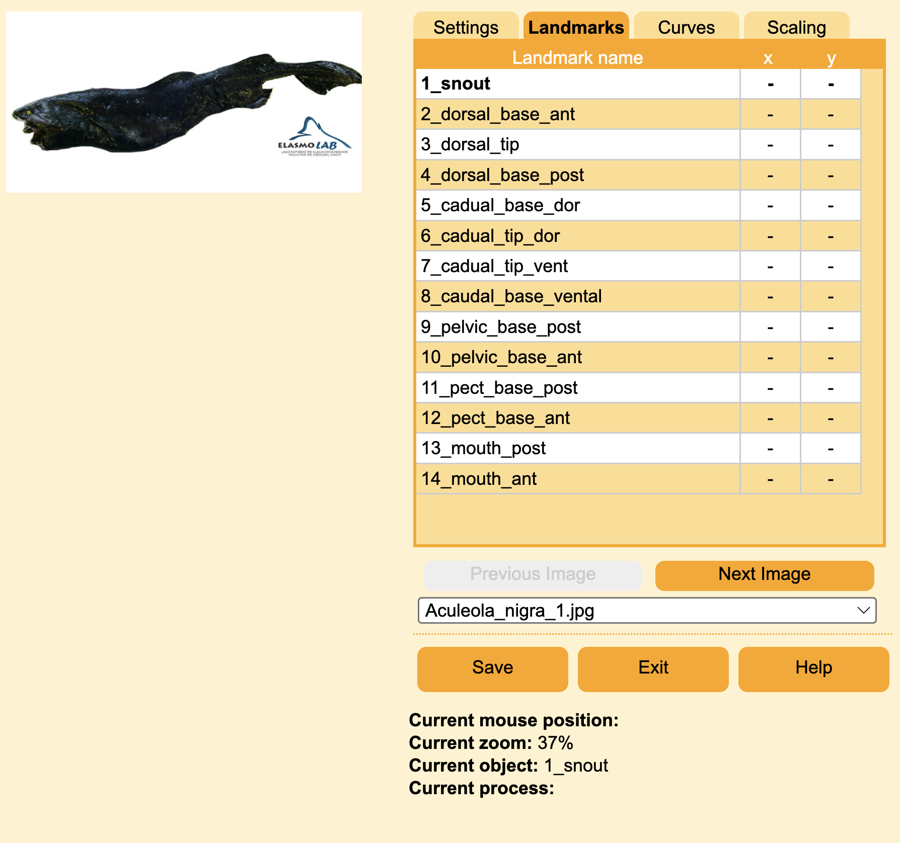
This browser window is small and cumbersome. It’s usually best to click on the “Open in Browser” button so that the same window will be loaded in your default web browser (e.g., Safari, Chrome, etc.)
This looks a lot better. Notice that the app displays the first image from your image directory as well as a series of tabs to the upper right, one each for “settings”, “landmarks”, “curves” and “scaling”. Click on the “settings” tab so that we can have a closer look and set some options that will make our digitizing easier.
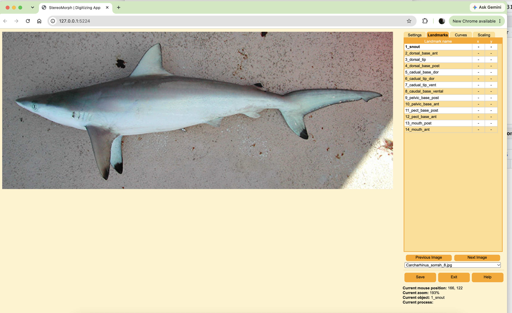
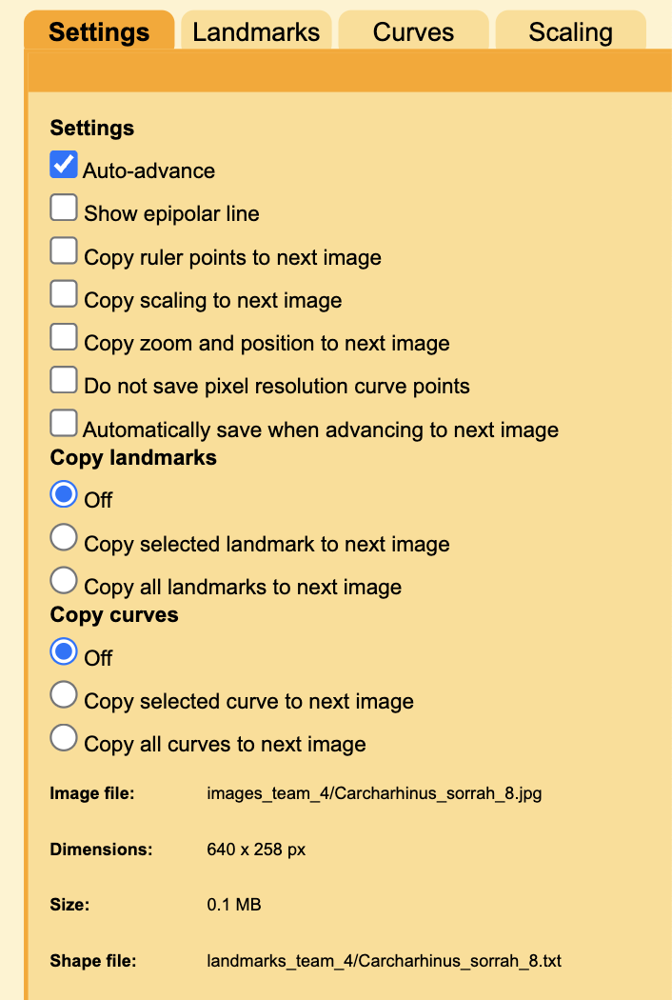
You’ll want to select “Auto-advance”. This setting automatically advances to the next landmark after you place one on the image. Other options may be important for other projects, but autoadvance is perhaps the only beneficial one. Let’s now have a look at the landmarks tab, the business end of the app.
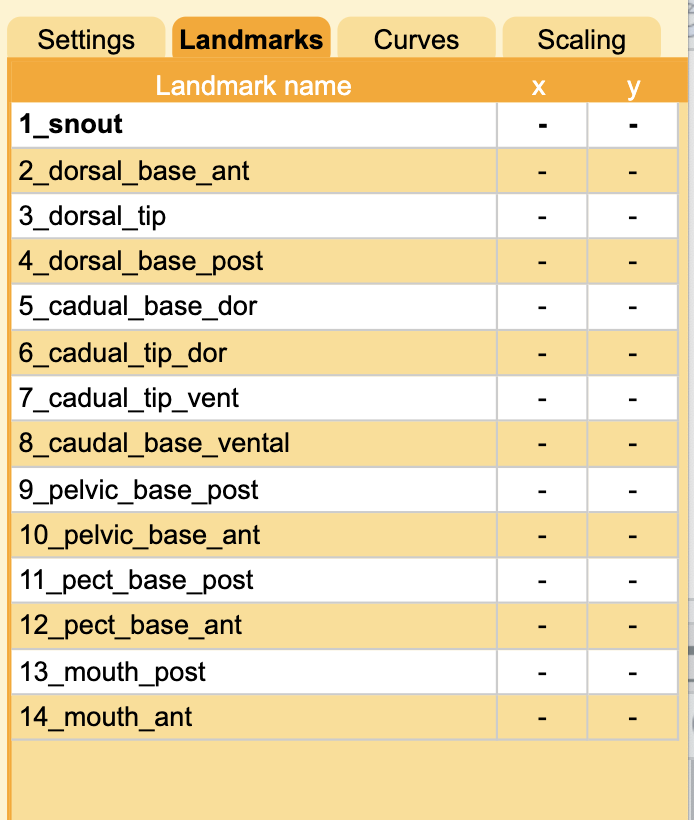
Notice that the character strings in our landmarks_ref
vector populate a landmark list and the first “1_snout” is bolded,
indicating that this is the active point. That is, where you put the
cursor on the image and press “x”, a coordinate will appear in that
bolded landmark line. Give it a shot: put the cursor somewhere near
where you want to mark the snout and type “x”. You’ll see that when you
type “x”, x-y coordinates appear, and, due to the autoadvance
setting, the next landmark, “2_dorsal_base_ant”, becomes bolded and
active. Continue on like this and you’ll very quickly have all 14
landmarks digitized. Once you’ve done this, click on “Save”. This will
tell the app to use some nifty R code to output your landmark
coordinates as a text file and do so in your chosen “shark_landmarks”
directory. Click “Next image” and you’re ready to do this again. You’ll
repeat this process for all the images your team is responsible for. In
the end, you’ll end up with 100 or so landmark files,
list.files("shark_landmarks") ## [1] "Aculeola_nigra_1.txt" "Aculeola_nigra_5.txt"
## [3] "Alopias_pelagicus_2.txt" "Alopias_superciliosus_1.txt"
## [5] "Alopias_vulpinus_1.txt" "Alopias_vulpinus_2.txt"
## [7] "Apristurus_aphyodes_1.txt" "Apristurus_australis_5.txt"
## [9] "Apristurus_australis_7.txt" "Apristurus_brunneus_3.txt"
## [11] "Apristurus_manis_2.txt" "Apristurus_sinensis_1.txt"
## [13] "Asymbolus_rubiginosus_1.txt" "Atelomycterus_baliensis_2.txt"
## [15] "Atelomycterus_baliensis_3.txt" "Atelomycterus_marmoratus_2.txt"
## [17] "Bythaelurus_canescens_3.txt" "Carcharhinus_albimarginatus_1.txt"
## [19] "Carcharhinus_amblyrhynchos_10.txt" "Carcharhinus_brevipinna_5.txt"
## [21] "Carcharhinus_dussumieri_3.txt" "Carcharhinus_falciformis_2.txt"
## [23] "Carcharhinus_fitzroyensis_1.txt" "Carcharhinus_limbatus_1.txt"
## [25] "Carcharhinus_macloti_1.txt" "Carcharhinus_obscurus_1.txt"
## [27] "Carcharias_taurus_2.txt" "Centrophorus_atromarginatus_1.txt"
## [29] "Centrophorus_granulosus_4.txt" "Centrophorus_moluccensis_1.txt"
## [31] "Centroscyllium_granulatum_5.txt" "Centroscymnus_owstonii_3.txt"
## [33] "Cephaloscyllium_albipinnum_1.txt" "Chiloscyllium_hasseltii_1.txt"
## [35] "Chlamydoselachus_anguineus_4.txt" "Dalatias_licha_2.txt"
## [37] "Deania_calcea_5.txt" "Echinorhinus_brucus_2.txt"
## [39] "Etmopterus_brachyurus_2.txt" "Etmopterus_granulosus_4.txt"
## [41] "Eusphyra_blochii_1.txt" "Galeocerdo_cuvier_3.txt"
## [43] "Galeocerdo_cuvier_5.txt" "Galeorhinus_galeus_1.txt"
## [45] "Galeus_polli_1.txt" "Ginglymostoma_cirratum_3.txt"
## [47] "Halaelurus_lineatus_1.txt" "Hemipristis_elongata_1.txt"
## [49] "Hemitriakis_leucoperiptera_1.txt" "Heptranchias_perlo_7.txt"
## [51] "Heterodontus_mexicanus_1.txt" "Hexanchus_griseus_1.txt"
## [53] "Iago_omanensis_1.txt" "Isistius_brasiliensis_1.txt"
## [55] "Lamna_nasus_1.txt" "Mitsukurina_owstoni_3.txt"
## [57] "Mustelus_lunulatus_1.txt" "Mustelus_mosis_3.txt"
## [59] "Nasolamia_velox_1.txt" "Negaprion_acutidens_4.txt"
## [61] "Orectolobus_ornatus_1.txt" "Oxynotus_centrina_3.txt"
## [63] "Prionace_glauca_4.txt" "Pseudocarcharias_kamoharai_1.txt"
## [65] "Rhizoprionodon_taylori_1.txt" "Scoliodon_laticaudus_2.txt"
## [67] "Scyliorhinus_canicula_6.txt" "Somniosus_antarcticus_1.txt"
## [69] "Sphyrna_zygaena_1.txt" "Squalus_megalops_2.txt"
## [71] "Triaenodon_obesus_1.txt"list.files("shark_landmarks") %>% length## [1] 71Note that the text files are automatically named according to the
image on which the landmarks are based. This is important for at least
two reasons. First, it’s easy link the landmarks back to the image,
leaving us capable of assessing the quality of the landmarks and images
later. Second, with the images in their directory and the landmarks in a
directory of their own, if you run digitizeImages() again,
exactly as before, the function links the landmarks files to the images
via the file names. Thus, this workflow establishes something like a
landmarking project that you can come back to, refining landmarks as
needed.
When digitizing with digitizeImages() and the app, a few
key strokes will be important for navigating through the landmark
list:
- “x” produces a set of landmark coordinates
- “n” advances to the next landmark making it active
- “p” goes back to the previous landmark making it active
- “d” deletes the active landmark
After your team has completed landmarking the assigned species, push them to your team’s repo in a “shark_landmarks” directory. Once all the data appear across the repos, Prof. Kenaley will evaluate the quality of the landmarks and do some post-processing if required. He’ll then push the full dataset to all the team repos.
Superimposition
After digitizing landmarks, we must remove the distracting variations of size, orientation, and position that can vary between specimens and thus add noise to the analysis of shape. This can be mitigated by using a superimposition method. Generalized Procrustes analysis (GPA) is the superimposition method of choice nowadays. GPA removes the variation of size, orientation, and position by superimposing the landmarks in a common coordinate system. The landmarks for all specimens are optimally translated, rotated, and scaled based on a least-squares estimation. The first step is translation and rotation to minimize the squared and summed differences (squared Procrustes distance) between landmarks on each specimen. Then the landmarks are individually scaled to the same units of centroid size. Centroid size is the square root of the sum of squared distances of the landmarks in configuration to their mean location. The translation, rotation, and scaling bring the landmark configurations for all specimens into a common coordinate system so that the only differing variables are based on shape alone. The new superimposed landmarks can now be analyzed in multivariate statistical analyses.
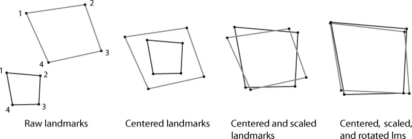
To perform a Procrustes superimposition on our landmark data—along
with many other analyses—we will turn to the geomorph
package. Please install and load geomorph. But, before we
do, let’s download and read in about 55 or so landmark files that
Prof. Kenaley produced ahead of this project. You can find these example
files here. You’ll have to
download this compressed directory and unzip it to your project
directory. You’ll also have to download and install the
abind package as well. Note: You can skip
this step if you’ve already completed your landmarking. Also note,
these are just your landmarks. You will need to
download the full data set evaluated by Prof. K.
To get started with superimposition, let’s load the package
geomorph. Whether you unzip the “shark_landmarks.zip”
directory to your project directory, or you’re working with the full
dataset, you have a folder named “shark_landmarks”, just as before. Our
first operation will be to read in the landmarks in the
“shark_landmarks” directory using StereoMorph’s
readShapes() function. For work in geomorph,
we need to convert this object to a geomorphShapes
object.
library(geomorph)## Warning: package 'geomorph' was built under R version 4.5.2## Loading required package: RRPP## Loading required package: Matrix##
## Attaching package: 'Matrix'## The following objects are masked from 'package:tidyr':
##
## expand, pack, unpack# load in landmarks
stereomorph_landmarks <- StereoMorph::readShapes(landmark_directory)
#convert
geomorph_landmarks <- geomorph::readland.shapes(stereomorph_landmarks)## Warning in GMfromShapes0(Shapes): No specimens have scaling. Unscaled landmarks imported, as a result#take a peak
geomorph_landmarks$landmarks %>% head## $Aculeola_nigra_1
## [,1] [,2]
## 1_snout 10 186
## 2_dorsal_base_ant 256 134
## 3_dorsal_tip 329 118
## 4_dorsal_base_post 338 109
## 5_cadual_base_dor 524 92
## 6_cadual_tip_dor 640 122
## 7_cadual_tip_vent 576 149
## 8_caudal_base_vental 519 115
## 9_pelvic_base_post 456 132
## 10_pelvic_base_ant 408 173
## 11_pect_base_post 193 210
## 12_pect_base_ant 171 228
## 13_mouth_post 56 214
## 14_mouth_ant 32 209
##
## $Aculeola_nigra_5
## [,1] [,2]
## 1_snout 91 269
## 2_dorsal_base_ant 446 200
## 3_dorsal_tip 536 201
## 4_dorsal_base_post 508 212
## 5_cadual_base_dor 824 236
## 6_cadual_tip_dor 991 213
## 7_cadual_tip_vent 884 301
## 8_caudal_base_vental 790 264
## 9_pelvic_base_post 662 285
## 10_pelvic_base_ant 622 298
## 11_pect_base_post 368 306
## 12_pect_base_ant 333 283
## 13_mouth_post 189 286
## 14_mouth_ant 150 288
##
## $Alopias_pelagicus_2
## [,1] [,2]
## 1_snout 39 165
## 2_dorsal_base_ant 163 139
## 3_dorsal_tip 186 106
## 4_dorsal_base_post 192 141
## 5_cadual_base_dor 297 150
## 6_cadual_tip_dor 607 92
## 7_cadual_tip_vent 321 203
## 8_caudal_base_vental 299 177
## 9_pelvic_base_post 248 183
## 10_pelvic_base_ant 230 188
## 11_pect_base_post 140 184
## 12_pect_base_ant 108 188
## 13_mouth_post 69 179
## 14_mouth_ant 60 179
##
## $Alopias_superciliosus_1
## [,1] [,2]
## 1_snout 40 173
## 2_dorsal_base_ant 221 132
## 3_dorsal_tip 257 89
## 4_dorsal_base_post 255 136
## 5_cadual_base_dor 365 151
## 6_cadual_tip_dor 603 72
## 7_cadual_tip_vent 389 202
## 8_caudal_base_vental 362 177
## 9_pelvic_base_post 310 186
## 10_pelvic_base_ant 281 194
## 11_pect_base_post 173 196
## 12_pect_base_ant 138 196
## 13_mouth_post 79 189
## 14_mouth_ant 66 189
##
## $Alopias_vulpinus_1
## [,1] [,2]
## 1_snout 17 135
## 2_dorsal_base_ant 163 109
## 3_dorsal_tip 192 73
## 4_dorsal_base_post 191 109
## 5_cadual_base_dor 319 122
## 6_cadual_tip_dor 619 21
## 7_cadual_tip_vent 339 179
## 8_caudal_base_vental 318 153
## 9_pelvic_base_post 249 159
## 10_pelvic_base_ant 230 160
## 11_pect_base_post 134 164
## 12_pect_base_ant 98 160
## 13_mouth_post 45 156
## 14_mouth_ant 36 152
##
## $Alopias_vulpinus_2
## [,1] [,2]
## 1_snout 38 225
## 2_dorsal_base_ant 157 190
## 3_dorsal_tip 185 144
## 4_dorsal_base_post 191 193
## 5_cadual_base_dor 319 206
## 6_cadual_tip_dor 608 153
## 7_cadual_tip_vent 331 263
## 8_caudal_base_vental 313 230
## 9_pelvic_base_post 248 239
## 10_pelvic_base_ant 220 245
## 11_pect_base_post 134 249
## 12_pect_base_ant 107 245
## 13_mouth_post 65 238
## 14_mouth_ant 52 237Landmarks stored in a geomorphShapes object are done so
in a 3-dimensional array, that is, essentially a list of similarly sized
2D matrices, where the position of the \(i^{th}\) matrix is given by the \(i^{th}\) index of the third dimension,
i.e., array[,,i]. This is a little wonky, but it’s how
geomorph functions expect landmarks to be arranged.
With a proper geomorphShapes object in place, we’re now
free to move on to the superimposition with the geomorph
function gpagen(). We’ll do this by saving the output to
gpa and plot the 14 aligned and superimposed landmarks for
all the specimens.
#gpa
gpa <- gpagen(geomorph_landmarks,ProcD = F )##
## Performing GPA
## | | | 0% | |================== | 25% | |=================================== | 50% | |==================================================== | 75% | |======================================================================| 100%
##
## Making projections... Finished!#plot superimposition
plot(gpa)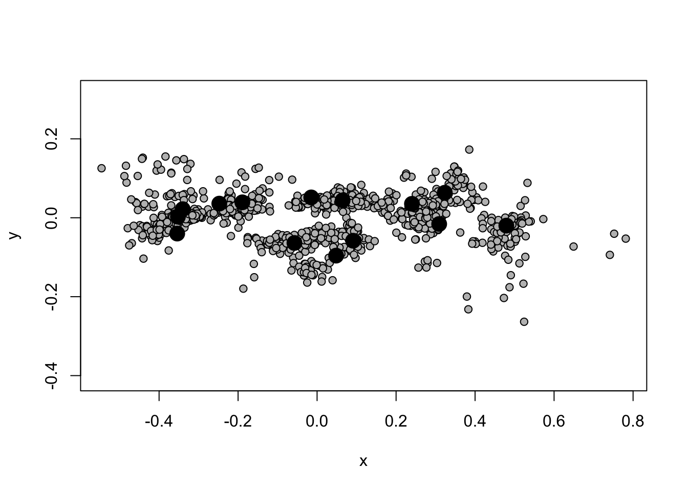
We’re now ready to start analyzing the data.
Analysis Part I: A Morphospace
In geometric morphometric analysis, researchers first turn to describing the axes of shape variation. Indeed, this is what Sternes and Shimada (2020) did to produce the figure above. This representation, which is what we’re after, is often termed a morphospace, a representation of the shapes the study group does and does not have.
To develop such a thing, biologists usually turn to principal
components analysis (PCA) whereby a very complicated suite of variables
is distilled into a set of fewer variables that describe the important
variance among the original variables. The coordinates contained in our
gpa object describe dozens of variables: scaled distances
between all the landmarks. So we have many variables to consider and
this becomes, very quickly, a serious multivariate
problem. PCA is suited to multivariate analysis because it reduces
the complexity of the data, taking many variables and distilling them
into just a few. At its core, PCA produces a series of regressions, or
vectors, that pass through the values of the original variables. This
operation is performed iteratively, with the first vector (the first
principal component, PC1), drawn through the variable space that
accounts for the most variance in the data set. After the combination of
variables forming PC1 is removed, a subsequent vector (PC2) is drawn
through another unique variable space that describes the second greatest
amount of variance. This continues until most of the variance is
captured, resulting in scores of PCs. The first two or three, however,
are usually enough to describe a healthy amount of variance.
To perform PCA, we’ll use geomorph’s
gm.prcomp() function like so, working with the
gpa object’s coordinates, that is, the 3-D array that
contains the Procrustes aligned landmarks. Plotting reveals our first
result.
#PCA
pca <- gm.prcomp(gpa$coords)
#visualize
plot(pca)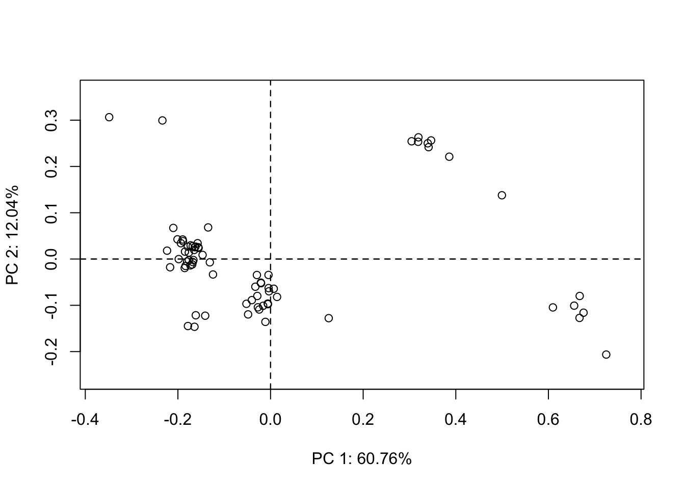
Wow, now we’re getting close to the Sternes and Shimada (2020) results and answering, at least in part, one of our questions: Does habitat result in different body shapes? But let’s break down what this plot means first. By default, when we plot a PCA object, the first two PCs are plotted, PC1 on the x axis, PC2 on the y. Each point represents the PC scores for a specimen in the data set. Notice that the amount of variance explained by our PCs is given and, as expected, PC1 contains most of the variance (55%) and PC2 considerably less (19%). If we plot again, but specify a different combination of PCs, say 1 and 3, we get a different plot, of course. Notice the variance explained by PC3 is predictably less than that of PC2.
plot(pca,1,3)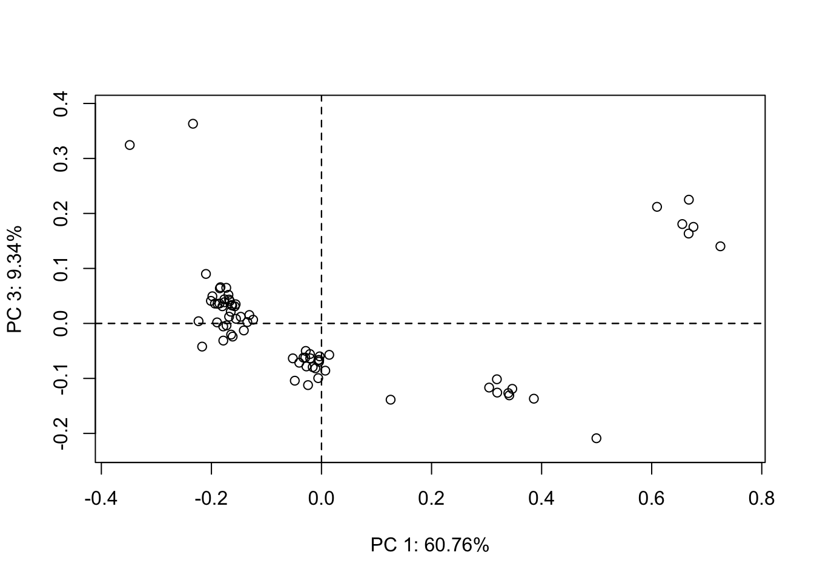
OK, so based on our PC plots, it looks as if we have two groupings, just like Sternes and Shimada (2020). But, do these groups correspond to largely pelagic vs. benthic species? It’s hard to tell. We don’t really know because we don’t know which species belong to each point in our plots, nor their habitat.
Notice, however, that the names of the coordinates in
gpa$coords are pegged to the image and landmark file names.
These names are, in fact, important metadata: data about the data. In
this case, the metadata are species names and, because we have images of
multiple specimens for each species, the specimen number.
head(dimnames(gpa$coords)[[3]])## [1] "Aculeola_nigra_1" "Aculeola_nigra_5"
## [3] "Alopias_pelagicus_2" "Alopias_superciliosus_1"
## [5] "Alopias_vulpinus_1" "Alopias_vulpinus_2"These values were maintained throughout the superimposition step and
in the PCA operation. The coordinates plotted in the PCA plots are
contained in a matrix named x in our pca
object. Notice the row names:
pca$x %>% data.frame %>% dplyr::select(Comp1,Comp2) %>% head## Comp1 Comp2
## Aculeola_nigra_1 -0.1347492 0.06824303
## Aculeola_nigra_5 -0.1785675 0.02661025
## Alopias_pelagicus_2 -0.1784004 -0.14478075
## Alopias_superciliosus_1 -0.1411163 -0.12245959
## Alopias_vulpinus_1 -0.1642404 -0.14641379
## Alopias_vulpinus_2 -0.1614284 -0.12151205So, we have the species names from whence the data, both landmark and PCA, came. Fortunately, Professor Kenaley assembled a table containing all the species for landmarking and the habitat for each. You can download this file and read in the data.
What’s left to do in exploring if benthic and pelagic sharks occupy
different regions of morphospace is to combine this information with the
PC scores in pca$x. Let’s first load the shark data and
consider how we’ll join it to our PCA data using species as the key.
#sneak a peak
head(shark_dat)## # A tibble: 6 × 3
## sp PCL habitat
## <chr> <dbl> <chr>
## 1 Aculeola nigra 40.4 benthic
## 2 Alopias pelagicus 164. pelagic
## 3 Alopias superciliosus 272. pelagic
## 4 Alopias vulpinus 290. pelagic
## 5 Apristurus albisoma 42.9 benthic
## 6 Apristurus ampliceps 85.5 benthicSo here we have a tibble that contains species, precaudal length (PCL), and habitat data. Our goal is to join these data to our PCA, and later, coordinate data. But how? Our PCA and coordinate data have the species information, but that name also includes the specimen number. That is, “Aculeola nigra” in our shark data won’t match “Aculeola_nigra_1” in our PCA and landmark data. To rip the species name out of the PCA and coordinate data, let’s turn to ‘grep’ (general regular expressions) functions.
PCA <- pca$x %>%
data.frame %>%
dplyr::select(Comp1:Comp4) %>%
rownames_to_column("sp_spec") %>%
mutate(sp=gsub("(.*)_(.*)_.*","\\1 \\2",sp_spec),
spec=gsub(".*_.*_(.*)","\\1",sp_spec)) %>%
left_join(shark_dat)## Joining with `by = join_by(sp)`head(PCA)## sp_spec Comp1 Comp2 Comp3 Comp4
## 1 Aculeola_nigra_1 -0.1347492 0.06824303 0.00242967 -0.09520205
## 2 Aculeola_nigra_5 -0.1785675 0.02661025 -0.00550200 -0.04723901
## 3 Alopias_pelagicus_2 -0.1784004 -0.14478075 -0.03121565 0.26195407
## 4 Alopias_superciliosus_1 -0.1411163 -0.12245959 -0.01276591 0.12160211
## 5 Alopias_vulpinus_1 -0.1642404 -0.14641379 -0.02031808 0.23094078
## 6 Alopias_vulpinus_2 -0.1614284 -0.12151205 -0.02392326 0.26322855
## sp spec PCL habitat
## 1 Aculeola nigra 1 40.4 benthic
## 2 Aculeola nigra 5 40.4 benthic
## 3 Alopias pelagicus 2 163.7 pelagic
## 4 Alopias superciliosus 1 272.4 pelagic
## 5 Alopias vulpinus 1 289.8 pelagic
## 6 Alopias vulpinus 2 289.8 pelagicWith that over with, we can dispense with the ugly PCA plots above
and use ggplot to visualize our results with respect to
habitat.
PCA %>%
ggplot(aes(Comp1,Comp2,col=habitat))+geom_point()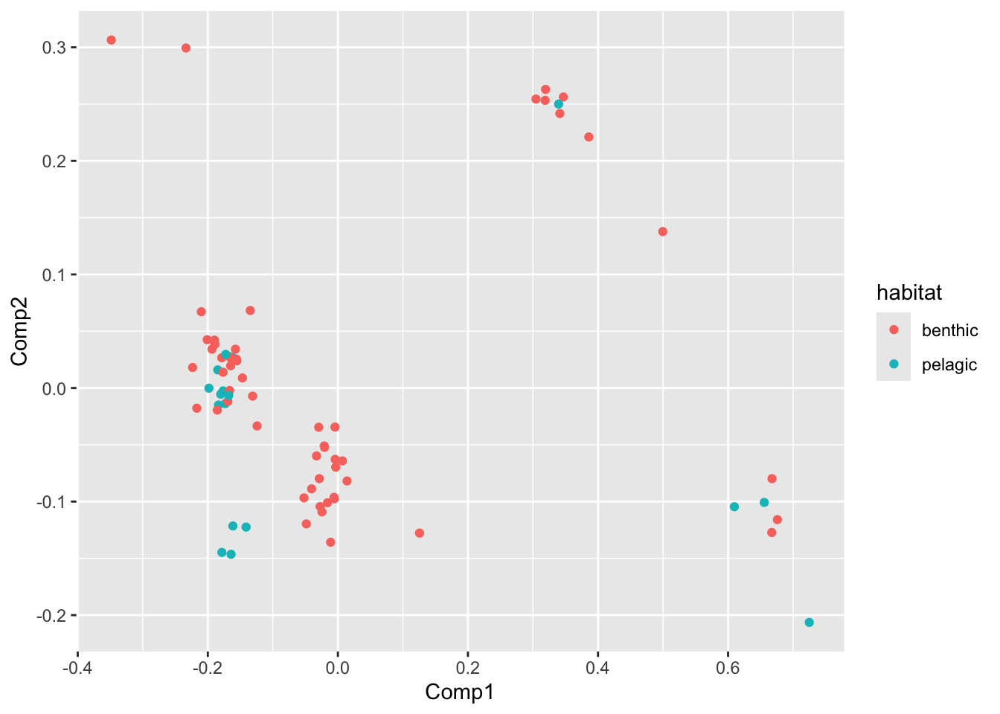
PCA %>%
ggplot(aes(Comp1,Comp3,col=habitat))+geom_point()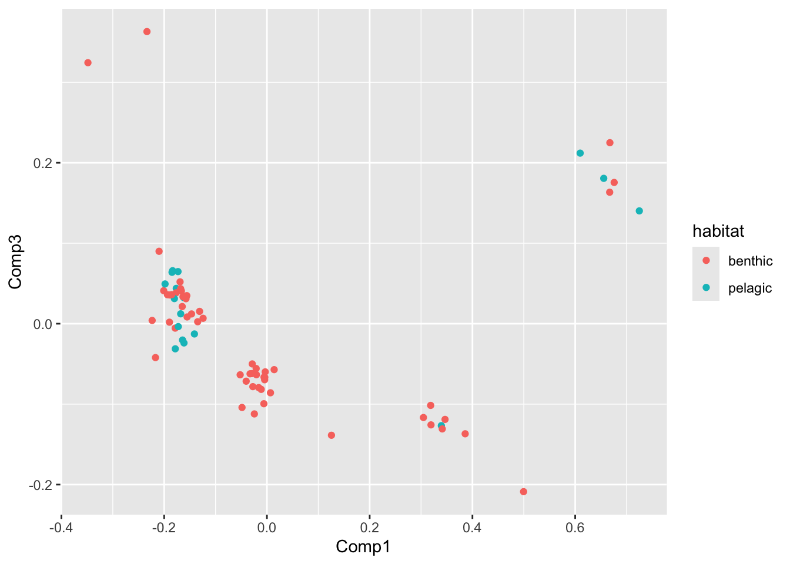
Voila! For morphospace described by PCs 1, 2, and 3, it appears that benthic species inhabit a specific region of morphospace.
This is wonderful, but you may be asking, “What is PC1 (or any other) describing?” Our PC points are abstractions of shape, but they don’t represent explicitly what shape that is. To get a sense of what our PCs represent in terms of shape values, we can turn to thin-plate spline analysis.
Note: you’re not asked to do anything like this for the report. Prof. K just wants to show you how you can derive shape changes represented by the PC axes.
#find min and max of each PC
max_PC1 <- which.max(pca$x[,1])
min_PC1 <- which.min(pca$x[,1])
max_PC2 <- which.max(pca$x[,2])
min_PC2 <- which.min(pca$x[,2])
#get the concesus, the mean shape of all data.
M <- gpa$consensus
#plot
par(mfrow=c(2,2))
#plot the change form the concensus to min of PC1
plotRefToTarget(M, gpa$coords[,,min_PC1], mag = 1,method="vector",label = T)
title("min PC1 warp",cex=0.6)
#plot the change form the concensus to max of PC1
plotRefToTarget(M, gpa$coords[,,max_PC1], mag = 1,method="vector",label = T)
title("max PC1 warp",cex=0.6)
#plot the change form the concensus to min of PC2
plotRefToTarget(M, gpa$coords[,,min_PC2], mag = 1,method="vector",label = T)
title("min PC2 warp",cex=0.6)
#plot the change form the concensus to max of PC2
plotRefToTarget(M, gpa$coords[,,max_PC2], mag = 1,method="vector",label = T)
title("max PC3 warp",cex=0.6)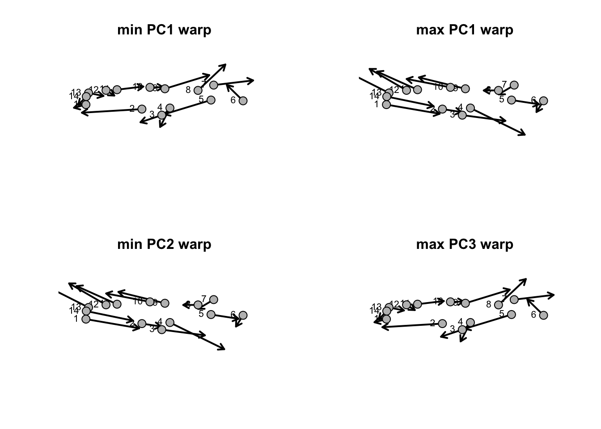
So, it looks like PC1 describes a shape change involving the placement of the dorsal fin (points 2-4) and pelvic fin (points 9 and 10). Lower values of PC1 represent a dorsal and pelvic fins that are displaced posteriorly while higher values represent anterior placements. PC2 largely describes a shape change involving the size of the caudal fin (points 5-8). Notice how low PC2 values represent shifts of points 5 and 8 (the start of the caudal fin) and 7 (the ventral lobe) to the anterior and a shift of point 8 (the dorsal lobe) to the posterior (i.e., elongation). High PC2 values represent a compression of the caudal fin length with point 8 (the dorsal lobe) shifted anteriorly.
And, with a little help from the package ggimage, we can
plot images representing the extrema of the first two PCs. Notice the
anterior shift of the dorsal fin along PC1 and the shortening of the
caudal fin along PC2.
library(ggimage)
PC_extremes <- PCA %>%
filter(Comp1 %in% range(Comp1)|
Comp2 %in% range(Comp2)) %>%
mutate(file_name=paste0(sp_spec,".jpg")) %>%
dplyr::select(Comp1,Comp2,sp,file_name) %>%
mutate(imgs =paste0("shark_images/",file_name))
p1 <- PCA %>%
ggplot(aes(Comp1,Comp2,col=habitat))+geom_point()
p1 + geom_image(data=PC_extremes,aes(Comp1,Comp2,image=imgs), size=.30,inherit.aes = F)+theme_classic()+xlim(range(PC_extremes$Comp1)*1.5)+ylim(range(PC_extremes$Comp2)*1.25)+theme(legend.position = c(0.1,0.2))
Analysis: Part II
Our PCA analysis reveals an interesting pattern. This, however, is
not a quantitative assessment per se, merely a visual and
qualitative result and not dissimilar to the qualitative results
reported by Sternes and Shimada (2020).
Several quantitative frameworks for assessing differences in shape
exist. The geomorph package contains several, but we’ll use
just one: a phylogenetically informed Procrustes ANOVA. The function
procD.pgls() will do this for us. Like with our anole
project in which we fit univariate traits with PGLS,
procD.pgls() fits a phylogenetic generalized least-squares
model for multivariate data under a Brownian motion model of
evolution.
As with our PGLS model fitting in the anole project, we need a tree
and the tree from Stein et al. (2018) mentioned above is the
most comprehensive. Once this tree file is downloaded, let’s read it in
and store it in an object named phy. Notice you’ll need the
phytools package and the function
readNexus().
library(phytools)## Loading required package: ape##
## Attaching package: 'ape'## The following object is masked from 'package:dplyr':
##
## where## Loading required package: maps##
## Attaching package: 'maps'## The following object is masked from 'package:purrr':
##
## mapphy <- readNexus("data/shark_trees.nex")
length(phy)## [1] 500Next, let’s restrict our tree file to those species in our data set.
For this, we’ll use ape’s keep.tip() which
keeps only the tips in a vector, in this case, the species in our PCA
and landmark analysis.
sp <- intersect(phy[[1]]$tip.label,PCA$sp %>% unique)
phy2 <- keep.tip(phy,PCA$sp)To undertake the analysis with procD.pgls(), we must
input the tree of course and a geomorph.dataframe, a
special data frame that includes the coordinates and variables (i.e.,
habitat) that will be in the model. But, as we’ve discussed above, we
have several specimens per species and thus multiple observations for
each tip in the tree. procD.pgls() can’t handle that. A
common solution to such a problem is to just calculate the mean values
of each species. For this, we can turn to a custom function that uses
geomorph’s mshape function to compute the mean
shape of each species. It will compute the mean shape for each unique
coordinate name, that is, species. Notice here that we reorder the
resulting array of mean shapes along its third dimension according to
the order of species (tip.label) in the tree, a standard
practice with comparative methods in R.
#install abind package
#install.packages("abind")
library(abind)
#mean shape of uniquely named coordinates
mean_shape <- function(x){
array(dim=3)
sp <- dimnames(x$coords)[[3]]
m_shapes <- list()
for(s in unique(sp)){
sp_n <- which(sp==s)
m_shapes[[s]] <- mshape(x$coords[,,sp_n])
}
m_ <- abind(m_shapes,along=3)
return(coord=m_)
}
#rename the coordinates
dimnames(gpa$coords)[[3]] <- PCA$sp
mean_coords <- mean_shape(gpa)[,,phy2[[1]]$tip.label]For the habitat data we’ll add to the
geomorph.data.frame, we need to establish a vector that is
also limited to our species and ordered according to the tip labels of
the tree.
hab <- setNames(shark_dat$habitat,shark_dat$sp)[phy2[[1]]$tip.label]Now the geomorph.data.frame.
gdf <- geomorph.data.frame(
mean_coords,
habitat=hab,
phy=phy2[[1]] #just one tree!
)We can now move on to the Procrustes PGLS. It will take as input the
geomorph.data.frame, a model formula, and the tree object
stored in it. The model formula follows model fitting conventions in R
with ~ and should reflect our question, “Does shape vary
according to habitat (i.e., mean_coords ~ habitat)?”
Lastly, procD.pgls() relies on permutations to obtain
statistical values, so we must specify the number of permutations with
iter. A value of 10,000 is plenty. Also note, messy
progress messages are suppressed with print.progress = F.
We can then run an ANOVA on this fitted model.
shark_pgls <- procD.pgls(mean_coords ~ habitat, phy = phy, data = gdf,
iter = 10000,print.progress = F)
anova(shark_pgls)##
## Analysis of Variance, using Residual Randomization
## Permutation procedure: Randomization of null model residuals
## Number of permutations: 10001
## Estimation method: Generalized Least-Squares (via OLS projection)
## Sums of Squares and Cross-products: Type I
## Effect sizes (Z) based on F distributions
##
## Df SS MS Rsq F Z Pr(>F)
## habitat 1 0.000426 0.00042566 0.0051 0.328 -0.8292 0.7891
## Residuals 64 0.083052 0.00129769 0.9949
## Total 65 0.083478
##
## Call: procD.lm(f1 = mean_coords ~ habitat, iter = iter, seed = seed,
## RRPP = TRUE, SS.type = SS.type, effect.type = effect.type,
## int.first = int.first, Cov = Cov, data = data, print.progress = print.progress)Running anova(shark_pgls) produces a table that
summarizes the relationship between habitat and body shape while
accounting for phylogenetic relatedness. Our main interest is the
habitat row, which tests whether benthic and pelagic sharks differ in
mean shape. Several columns help us interpret this result.
Column
What does it tell us?
DfThe degrees of freedom associated with each source of variation.SSThe sum of squares: the amount of variation attributed to habitat.MSThe mean square, calculated as SS / Df.RsqThe proportion of variation attributed to habitat in the fitted phylogenetic model.FThe ratio of the habitat mean square to the residual mean square.
-Z How far the observed test statistic lies above or
below its randomized expectation, measured in standard deviations.
Pr(>F) The permutation p-value: how often randomized
results are at least as large as the observed F statistic.
To assess the magnitude of the habitat effect, look first at
Rsq, or \(R^2\). For
example, an R² of \(R^2\) would
indicate that habitat accounts for 8% of shape variation in the fitted
model, with the remaining 92% left in the residuals. This does not
establish that habitat causes those differences, but it tells us how
much variation is associated with habitat.
The Z column addresses a much different question: How
unusual is the observed effect relative to what we would expect without
a habitat effect? A Z score of 2 means that the observed
log-F statistic is two standard deviations above the mean randomized
value. A Z near zero indicates a result close to the
randomized expectation. A negative Z indicates a
smaller-than-expected statistic.
Finally, Pr(>F), the vaunted p value, provides the
permutation test of statistical significance. A small p value indicates
that an F statistic as large as ours is unlikele under the null
hypothesis. However, statistical significance and effect magnitude are
different properties. Habitat could explain a small proportion of shape
variation and still yield a significant result. Therefore, its wise to
interpret \(R^2\) alongside
Z and p values
Because our analysis includes 500 alternative phylogenetic trees, we should also ask whether these conclusions depend on the tree used. More on that later. Nonetheless, based on analysis using one of the trees and for this limited data set of ~50 species, there’s no significant difference in mean shape between habitat groups.
Analysis Part III: Evolution in Parallel
Our secondary question, if you remember, was, “Has the body
shape of pelagic and benthic sharks evolved at the same rate?”.
This is a much different question than the first. We want to know,
overall, if the shape of lineages that invaded a particular habitat has
evolved faster or slower than those invading another habitat. For this,
we’ll turn to the geomorph package once again, in
particular, its compare.evol.rates() function. This
function calculates net rates of shape evolution for groups of species
on a phylogeny from a set of aligned landmarks. The approach is based on
between-species differences in morphospace after phylogenetic
transformation. In other words, after correcting for phylogenetic
relatedness, it compares relative rates of shape change.
Because we’re correcting for phylogeny in this analysis, we need the
tree from Stein et
al. (2018) mentioned above. Once this tree file is
downloaded, let’s read it in and store it in an object named
phy. Notice you’ll need the phytools package
and the function readNexus().
To undertake the analysis with compare.evol.rates(), we
must specify A, the aligned coordinates in a landmark array
of mean shape (mean_coords), a tree (more in just a bit),
and our previously established vector of habitat groups describing to
which group each species in the array belongs.
er <- compare.evol.rates(A=mean_coords, phy=phy2[[1]], method="simulation",gp=hab,print.progress = F)
print(er)##
## Call:
##
##
## Observed Rate Ratio: 1.0461
##
## P-value: 0.828
##
## Effect Size: -1.1265
##
## Based on 1000 random permutations
##
## The rate for group benthic is 4.4703651655299e-05
##
## The rate for group pelagic is 4.67636903987291e-05So it appears that neither of the groups is faster than the other (p=0.98). But, we have a problem. You may have noticed that when we loaded our tree file, the length of this list of trees is 500. These are 500 trees produced by Stein et al. (2018) using the bootstrapping method mentioned earlier. Many of these trees are incongruent, that is, they represent different relationships for the sharks and this, in turn, represents some serious phylogenetic uncertainty.
Also notice that in our rate analysis and Procrustes PGLS, we used
only one tree in this list (phy=phy2[[1]]). There are 499
other trees we could have used, perhaps each representing a different
phylogenetic hypothesis. The results of a comparative analysis like this
could, and likely will, vary according to the phylogenetic hypothesis
used in it. So what to do?
This is a common problem faced by comparative biologists and, fortunately, there seems to be a consensus among us to repeat our comparative analysis using a random sample or, ambitiously, all of the trees that represent the phylogenetic uncertainty. By repeating an analysis, we produce a series of results based on new parameters (i.e., phylogenetic distance) to our model. In this case, the new parameters would come from using any or all of the trees. This establishes what is akin to a posterior sample and from this we can extract a posterior distribution of estimates, in our case, a distribution of evolutionary rates.
Therefore, we have before us the proposition of repeating our
analysis, let’s say 10 times. To do this, we could randomly sample 10 of
the trees and build a posterior distribution of evolutionary rates using
a for loop.
set.seed(1234)
phy_sample <- sample(phy2,10)
er_l <- list()
t <- system.time(for(i in 1:length(phy_sample)){
er_l[[i]] <-compare.evol.rates(A=mean_coords, phy=phy_sample[[i]], method="simulation",gp=hab,print.progress = F) %>% summary
}
)##
## Call:
##
##
## Observed Rate Ratio: 1.0294
##
## P-value: 0.897
##
## Effect Size: -1.3487
##
## Based on 1000 random permutations
##
## The rate for group benthic is 6.60683272246625e-05
##
## The rate for group pelagic is 6.80080661260081e-05
## Call:
##
##
## Observed Rate Ratio: 1.078
##
## P-value: 0.721
##
## Effect Size: -0.7339
##
## Based on 1000 random permutations
##
## The rate for group benthic is 4.00017209801035e-05
##
## The rate for group pelagic is 4.31207813205717e-05
## Call:
##
##
## Observed Rate Ratio: 1.0816
##
## P-value: 0.717
##
## Effect Size: -0.7012
##
## Based on 1000 random permutations
##
## The rate for group benthic is 3.79594400997916e-05
##
## The rate for group pelagic is 4.10561687835116e-05
## Call:
##
##
## Observed Rate Ratio: 1.0651
##
## P-value: 0.757
##
## Effect Size: -0.8733
##
## Based on 1000 random permutations
##
## The rate for group benthic is 4.38283527629786e-05
##
## The rate for group pelagic is 4.66817649503554e-05
## Call:
##
##
## Observed Rate Ratio: 1.0837
##
## P-value: 0.706
##
## Effect Size: -0.6759
##
## Based on 1000 random permutations
##
## The rate for group benthic is 3.2985366824756e-05
##
## The rate for group pelagic is 3.57446961600127e-05
## Call:
##
##
## Observed Rate Ratio: 1.0968
##
## P-value: 0.662
##
## Effect Size: -0.5397
##
## Based on 1000 random permutations
##
## The rate for group benthic is 4.14120368930612e-05
##
## The rate for group pelagic is 4.54219017217209e-05
## Call:
##
##
## Observed Rate Ratio: 1.0386
##
## P-value: 0.855
##
## Effect Size: -1.2074
##
## Based on 1000 random permutations
##
## The rate for group benthic is 3.80932742752085e-05
##
## The rate for group pelagic is 3.95635045754476e-05
## Call:
##
##
## Observed Rate Ratio: 1.1213
##
## P-value: 0.593
##
## Effect Size: -0.2801
##
## Based on 1000 random permutations
##
## The rate for group benthic is 4.04929432784595e-05
##
## The rate for group pelagic is 4.54052890871042e-05
## Call:
##
##
## Observed Rate Ratio: 1.0611
##
## P-value: 0.773
##
## Effect Size: -0.9218
##
## Based on 1000 random permutations
##
## The rate for group benthic is 3.78910221146332e-05
##
## The rate for group pelagic is 4.02062231842201e-05
## Call:
##
##
## Observed Rate Ratio: 1.0465
##
## P-value: 0.827
##
## Effect Size: -1.1137
##
## Based on 1000 random permutations
##
## The rate for group benthic is 3.8348716859824e-05
##
## The rate for group pelagic is 4.01326656809464e-05Here we used set.seed() to make the
sample() function randomly sample the same set of 10 trees.
This is important so that we can all perform the same exact analyses,
that is, our analyses are repeatable. You’ll notice that the loop uses
each random tree to repeat the analysis and store the summary of the
model (i.e., the rate comparisons) to the list er_l. Notice
also that the entire loop is wrapped in system.time(). This
is done so that, in this preliminary analysis, we can record how much
time the loop took. Printing t reveals that it took 7
seconds.
Because our results are stored in a list, we can use
lapply() to extract the rate comparisons.
lapply() takes a list and applies a function to each
element. In our case, we need to encode a custom function that extracts
sigma.d.gp and sigma.d.ratio, the rate for
each group and rate ratio between them, respectively. For this, we ask
the function to work on every value of er_l, read it as
x, then combine sigma.d.gp and
sigma.d.ratio and store it in er_ temporarily.
We then apply a name to the third value “ratio”, and return the vector.
lapply() returns a list, so we combine all elements of it
using do.call(). We apply the row-binding function
rbind() to the list using the pipe and . and
lastly, make the output a data frame.
er <- lapply(er_l,function(x) {
er_ <- c(x$sigma.d.gp,x$sigma.d.ratio)
names(er_)[3] <-"ratio"
return(er_)
}) %>% do.call(rbind,.) %>% data.frame
head(er)## benthic pelagic ratio
## 1 6.606833e-05 6.800807e-05 1.029360
## 2 4.000172e-05 4.312078e-05 1.077973
## 3 3.795944e-05 4.105617e-05 1.081580
## 4 4.382835e-05 4.668176e-05 1.065104
## 5 3.298537e-05 3.574470e-05 1.083653
## 6 4.141204e-05 4.542190e-05 1.096828With a little massaging with pivot_longer(), we can plot
the posterior distribution of rates for each habitat like so.
er %>%
pivot_longer(benthic:pelagic) %>%
ggplot(aes(name,value)) + geom_boxplot()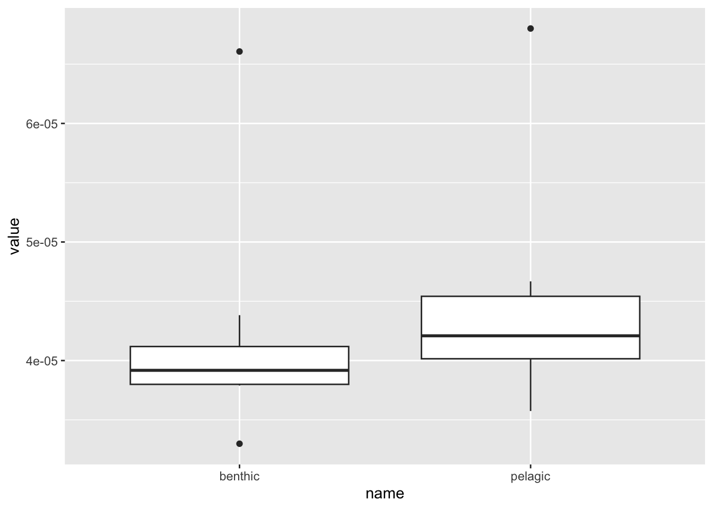
Indeed, it appears that when we estimate evolutionary rates for 10 random trees, accounting for uncertainty in species relationships, pelagic species evolve about as fast as benthic ones.
Now, this is all well and good. But, most comparative biologists would argue that 10 random trees do not make a posterior distribution. We should probably sample many more or, perhaps, use the entire set of trees.
What’s to stop us? Well, if we shoot for the stars and use all 500 trees in 500 separate analyses, we’d be looking at running a for loop 50 times longer than 10 trees took (roughly 350 s or 6 minutes, see figure below). In the world of comparative methods, this isn’t such a long time, but remember, this is a preliminary analysis of only 90 or so of the 265 we hope to include. The figure below indicates that including all 220 species and using all 500 trees would take ~2500 s or about 40 minutes!!!
## Warning in geom_text(aes(50, 500, label = "computed"), inherit.aes = F): All aesthetics have length 1, but the data has 48 rows.
## ℹ Please consider using `annotate()` or provide this layer with data containing
## a single row.## Warning in geom_text(aes(175, 2200, label = "predicted"), inherit.aes = F): All aesthetics have length 1, but the data has 48 rows.
## ℹ Please consider using `annotate()` or provide this layer with data containing
## a single row.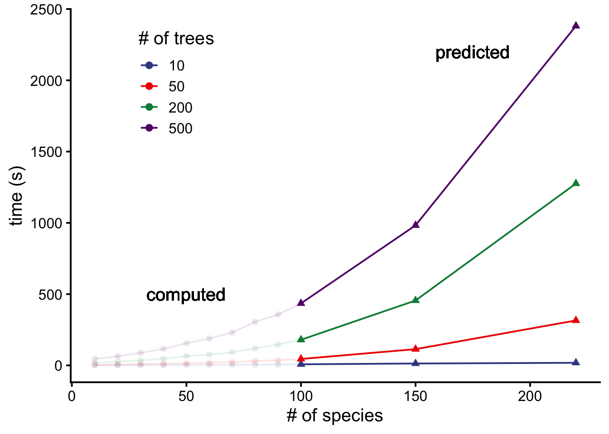
geomorph’s compare.evol.rates().
We should, therefore, be prepared for the long haul. But, hold on. I don’t know about you, but on most days, I don’t have 40 minutes to spare, even for very interesting comparative analyses. Fortunately, to avoid 100s of iterations of the same operations on different data, we can make use of a very common work-around in scientific computing: parallelization, the simultaneous execution of different pieces of a larger computation across multiple computing processors or cores. In fact, this sort of problem is considered embarrassingly parallel, that is, it is so very easy to split this task into many parallel subtasks. Specifically, we have 500 identical tasks; we need only to break these up into subtasks that run in parallel. That’s what we’ll do.
R has several packages for parallel computing. Perhaps
the most versatile in the future package. It works across
operating systems and has a relatively simple workflows.
future_lapply() from the future.apply
package is simply an extension of lapply() using the
functions of future that takes the tasks performed on each
item in a list and spreads the tasks across multiple cores on a
computer. This is perfect for embarrassingly parallel problems.
For example, say we wanted to do something that’s simple, but takes
just a little bit of time, like generating 10 million random values from
a normal distribution (mean=0, sd=1) any
number of times. Let’s encode a function that does this and allows one
to specify how many times to do it.
my_fun <- function(x){for(i in x) rnorm(1e7)}For comparison, let’s first use the non-parallel
lapply() to run the function 50 times and then use a
typical workflow using future_lapply() to do the same.
We’ll breakdown what’s happening here afterward.
library(future)
library(future.apply)
# Run sequentially
set.seed(1234) #for repetition
t_nomc <- system.time(
lapply(1:50, my_fun)
)
# Run in parallel
# Set up parallel R sessions, leaving two cores available
plan(
multisession,
workers = availableCores(omit = 2)
)
set.seed(1234) #for repetition
t_mc <- system.time(
future_lapply(1:50, my_fun, future.seed = TRUE)
)
# Shut down the background workers
plan(sequential)
print(t_nomc)## user system elapsed
## 12.848 0.323 13.206print(t_mc)## user system elapsed
## 1.056 0.157 7.030plan() controls how the work runs. It creates separate
background parallel R sessions and works on Windows, macOS, and Linux.
Each session will be a worker, and the work of the 50 operations is
distributed across workers rather than repeated in full by every worker.
With workers = availableCores(omit = 2), we’re asking that
we distribute the work over the number of available cores minus two
usings one of future’s handy functions for determing the
number of cores. Most modern laptops and desktops have at lease a half
dozen cores, but we don’t want all of them to be used by the operation.
We should leave a few cores that the computer can use for operations
running in the background.
future_lapply() takes the identical arguments—list then
function to apply over list values—but has a few more devoted to
controlling the parallel operations. Because my_fun()
generates random values, we use future.seed = TRUE. The
other set.seed() calls also make for reproducible parallel
results.
We should shut down the parallel session when we don’t need it and
that requires that we run plan(sequential), returning
operations back to sequential.
Note that we ran the sequential and parallel operations in
system.time() so that we can record how long each takes. As
you can see, the parallelized operation was considerably faster than
lapply(). You may be asking, “Wait, if we divided the work
over 6 cores, why didn’t we see a 6-fold increase in speed?” That’s a
great question. We don’t see that linear increase because starting
workers and transferring data takes time, that is, parallelization has
overhead. A parallel apparach most useful when each task takes enough
time to outweigh that overhead. Like say, say running PGLS models and
evolutionary rates analyses on large data sets.
Thus, this framework looks like it could really speed up our estimation of body shape evolutionary rates. You are tasked with assessing habitat-driven differences in shape and evolutionary rates using all species in the data set and all 500 of the phylogenetic trees from Stein et al. (2018) using a parallelized approach.
Project Report
Please submit your report and all associated data to your team GitHub repository as an .Rmd document with HTML output that addresses the following:
- Establish an array suitable for analysis using the
geomorphfunctions outlined above. Construct this from all specimens digitized in this compressed directory and Procrustes align them (note: this will be available soon after all landmark data are collected). - Does habitat result in the occupation of a different regions of
morphospace? Please qualitatively answer this question using a
ggplot-rendered morphospace based on the first two PCs from a principal components analysis of your alignment. - Is there a shape difference between habitats?
- Is the rate of morphological evolution significantly different between different habitat types?
Answer both questions empirically based on results produced through parallelization of your analyses including each of 500 phylogenetic trees.
Specifically . . . 1. For Procrustes PGLS, plot the distribution of
\(R^2\), report its median and 0.25 and
00.95 range and the proportion of trees yielding ANOVA p-values below
0.05. 2. Make sure the distributions of Z values from the Procrustes
PGLS and of rate estimates are created through parallelization of your
analyses. 3. Please assess the statistical significance of habitat on
both distributions using a simple two-sided t-test
(i.e. t.test()).
- What inferences regarding ecology and behavior can you make concerning the relationship between habitat and both shape and rates of morphological evolution?
In answering your questions, your .Rmd should include the following components:
- A YAML header that specifies HTML output, the authors, and a bibliography named “BIOL3140.bib”. Submit this bibliography as well!
- Sections including an introduction, methods, results, discussion,
author contributions, and references. Make sure that each, aside from
the references, includes one to two short paragraphs. Specifically:
- Introduction: Frame the questions, indicating why they are important, what background work has been done in this realm, and how you will answer them. Please include at least one reference to support the summary of previous work. Note: this can be done easily by refiguring the introduction to this project report.
- Methods: Explicitly state how you answered the questions, including a narrative of all the analyses, both qualitative and quantitative.
- Results: Include any appropriate figures or tables and a narrative of the main results that are important to answering the questions.
- Discussion: Succinctly declare how the results relate to the question and how they compare to previous work devoted to the topic. In addition, be sure to comment on the importance of your findings to the broader topic at hand. Please include at least one reference to another relevant study. Note: circling back to the introductions, both to this project description and your report, will be helpful here.
- Author contributions: Briefly outline what each team member contributed to the project.
- AI-use statement: Briefly state how AI was used in the completion of the report requirements.
Each team should push one report Rmd as “Module5_TeamX.Rmd” where “X” is the team number. Please also submit all associated files and data (e.g., .bibtex files, .csv files, etc.). This means one team member should push the team’s submissions to their team’s GitHub directory, i.e., “Module5_Team1”, if in Team 1. Project reports should be pushed by 11:59 PM on Sunday, October 25th.